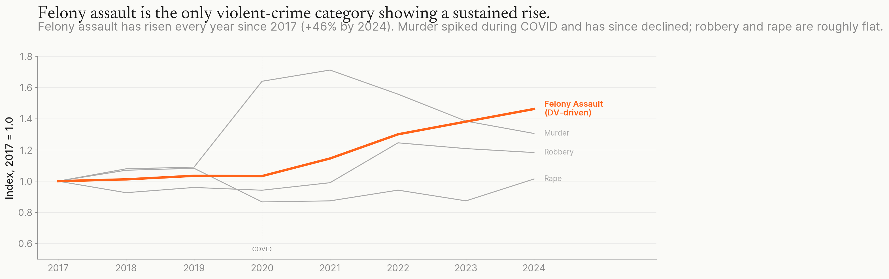
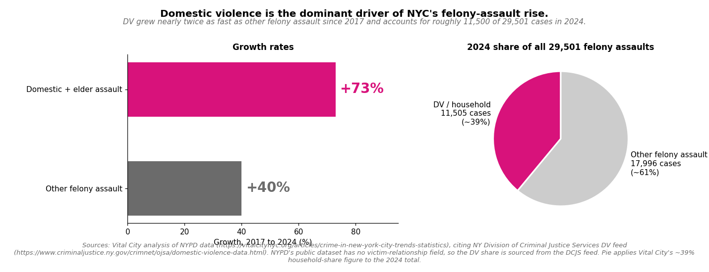
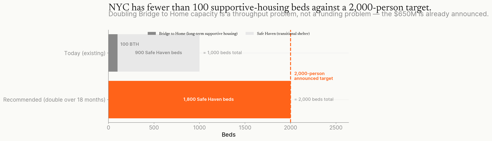

NYC has a sustained felony-assault crisis with a large domestic-violence component. The city's response isn't scaling.
Since 2017, felony assault is the one violent crime in New York that keeps rising; its largest and fastest-growing piece is domestic; and the budget meant to prevent it has stayed flat. Here is what the data show, and what to do.
Felony assault is the only violent-crime category showing a sustained rise.
Felony assault has risen every year since 2017 (about +46% by 2024). Murder spiked during COVID and has since declined; robbery and rape are roughly flat.

Source: NYPD Complaint Data Historic. Each line indexed to its 2017 value. Chart shows only the four violent-felony categories; property and non-violent felonies are not included.
Begin in 2017, because that is where the city's own category records begin to speak clearly. Since then, in a town that has grown safer by almost every other measure, one kind of harm has risen every single year. Murder climbed in the plague years and fell again; robbery held; rape held. Only felony assault kept climbing, rising every year until by 2024 it was about half again as high as in 2017. This is not the general weather of a hard city. It is one wound, and it has stayed open.
What, then, is driving it? Since 2017, domestic and elder assault together have grown by roughly seventy-three percent, nearly twice the pace of other felony assault, and in 2025 close to two of every five felony assaults in the city were classified as domestic. We have built our whole idea of safety around the locked door, and for too many the locked door is exactly where the danger lives. The room we name for refuge has become the most dangerous room thousands of New Yorkers will ever enter.
Domestic violence is the largest component of NYC's felony-assault rise.
Domestic and elder assault grew nearly twice as fast as other felony assault since 2017; DV alone was about 39% of felony assaults in 2025.

Sources: Vital City analysis of NYPD data, citing the NY Division of Criminal Justice Services DV feed. NYPD's public dataset has no victim-relationship field, so the DV share is sourced from the DCJS feed. The 73% growth figure combines domestic and elder assault; the 39% share is for domestic violence in 2025.
I want to be careful, because the data can be made to say more than it knows. NYPD's public records carry no field for the relationship between the people involved, so the domestic share comes from a state feed rather than from the department's own counts; some of the rise may be a change in what gets reported and charged rather than in what is done. The department itself names three currents, not one: assaults on officers, domestic violence, and attacks between strangers. So I will claim only what the record can bear. Domestic violence is the largest and fastest-growing part of a real rise. It is not the whole of it, and the rise is real.
Now ask what the city has done with this knowledge. Money is a form of attention, and by that measure the city has looked elsewhere. In real dollars, after inflation, spending on domestic-violence prevention has not moved since 2017. Per person harmed, the city now spends less than it did. Three years running the Council asked for more, for housing and lawyers and shelter, and three years running the budget answered with a zero. A zero is not an oversight. It is a sentence, passed quietly, on people whose names will never reach the papers.
And yet the money exists; it is simply aimed elsewhere. In 2025 the city announced a separate plan, six hundred and fifty million dollars for roughly a thousand supportive-housing and shelter beds, written for people living on the street and in psychiatric crisis, not for survivors of domestic violence. That is a different budget line from the prevention dollars the Council kept asking for. But a safe place to stay is exactly what a person fleeing a violent home needs, and survivors could be made a priority for those beds.
NYC's $650M plan funds about 1,000 supportive-housing beds.
About 100 Bridge to Home beds plus 900 Safe Haven beds. The priority is standing them up, keeping them full, and prioritizing survivors, not a higher bed target.

Source: NYC Mayor's January 2025 Care, Community, Action announcement. BTH = Bridge to Home (long-term supportive housing); Safe Haven = transitional shelter. Tsemberis Pathways-to-Housing RCT and replications underpin the supportive-housing evidence base.
The beds are mostly still on paper. Build them, fill them, and put the survivor first in line. To the 911 call that is a breakdown and not a crime, send help that does not arrive carrying a gun, and send it at three in the morning, not only at noon. Where we do not yet know what works, try a few things the evidence will actually bear, in a handful of precincts: a danger screen at the scene, and a hard, focused word to those most likely to do violence. And promise, in writing, to end whatever fails.
None of this is beyond us. The cost is a rounding error against the city's budget gap. The obstacle has never been money, and it has never quite been knowledge. It is attention. What a city counts is what it has agreed to value, and what it refuses to count is what it has decided it can live without seeing. The figures here say that we have agreed not to see the people in the most danger from those closest to them. I am asking the city to look. To look is not yet to save anyone, but nothing has ever been saved that was not first looked at, and looked at plainly.
Sources & method
Felony-assault and category counts are from NYPD Complaint Data Historic, compared on a 2017-to-2024 basis, the window where the department's category data is consistent. The domestic-violence share comes from the NY State DCJS feed reported by Vital City, because NYPD's public data has no victim-relationship field; the roughly 73 percent growth combines domestic and elder assault, and the roughly 39 percent share is a 2025 figure. Spending is from NYC Council Finance Committee HRA reports, adjusted for inflation. The national comparison uses FBI UCR and the Council on Criminal Justice. Program evidence: Koppa 2024 (Lethality Assessment Program) and Sechrist and Weil 2018 (offender-focused deterrence); B-HEARD figures from the NYC Comptroller's 2025 audit; the housing plan from the Mayor's January 2025 announcement.
Built with Claude Code; the author directs intent, makes every decision, and is solely responsible for the argument.